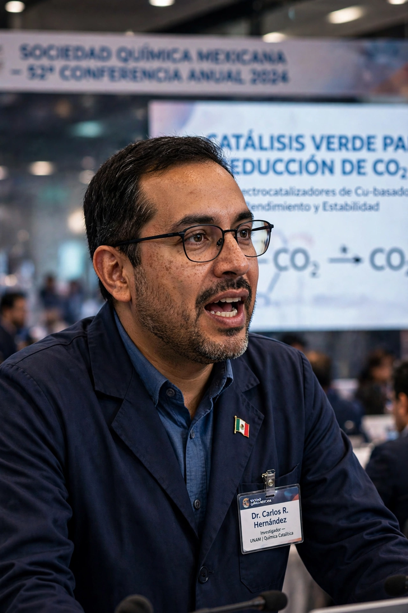

| Mario José Molina-Pasquel Henríquez | |
|---|---|
| Born | 19 March 1943, Mexico City, Mexico |
| Died | 7 October 2020 (aged 77), Mexico City, Mexico |
| Fields | Atmospheric chemistry |
| Institutions | University of California, San Diego; MIT; UC Irvine |
| Known for | Chlorofluorocarbon–ozone depletion theory |
| Awards | Nobel Prize in Chemistry (1995); Presidential Medal of Freedom (2013) |

Mario José Molina-Pasquel Henríquez (19 March 1943 – 7 October 2020) was a Mexican chemist who, with F. Sherwood Rowland, predicted in 1974 that chlorofluorocarbons (CFCs) would destroy stratospheric ozone. Their work led to the Montreal Protocol and earned them a share of the 1995 Nobel Prize in Chemistry, making Molina the first Mexican-born Nobel laureate in the sciences.
Working as a postdoctoral researcher with Rowland at the University of California, Irvine, Molina showed that CFCs, then widely used as refrigerants and propellants, would rise intact to the stratosphere, break down under ultraviolet light, and release chlorine atoms that catalytically destroy ozone. The discovery was initially contested by industry but was vindicated by the discovery of the Antarctic ozone hole in 1985, and underpinned the Montreal Protocol of 1987 and later measures such as the Kigali Amendment.
Molina held professorships at MIT and the University of California, San Diego, advised US presidents on climate and environment, and founded a research centre in Mexico City bearing his name, working on air quality and climate policy until his death in 2020.